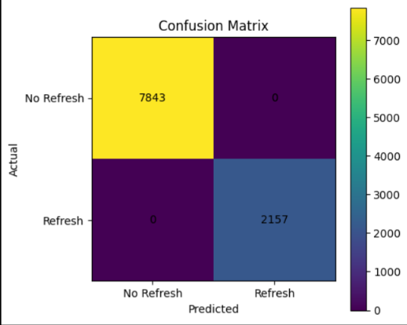
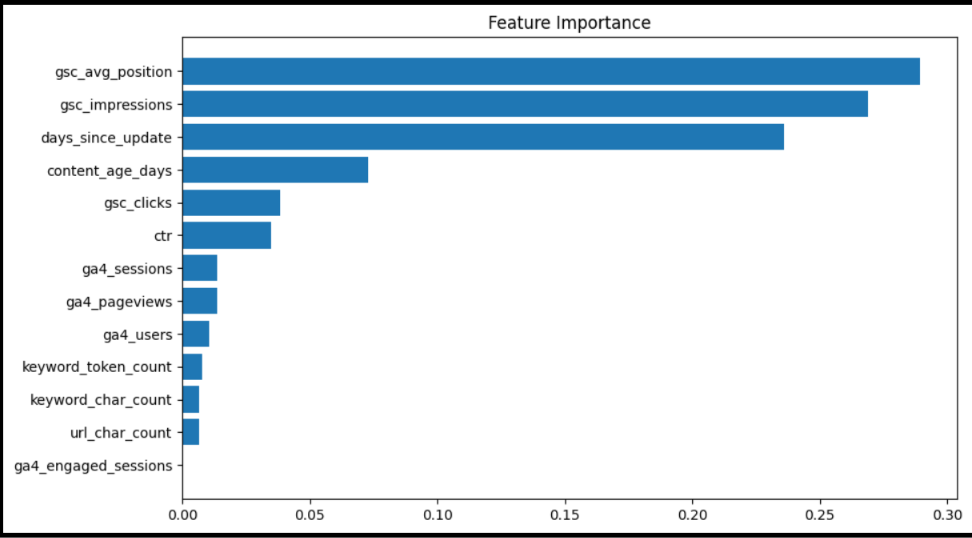

Author:
Rangala Karthikeya
FlyRank Machine Learning Internship Capstone
Search engine visibility is highly dynamic, and the performance of digital content naturally changes over time due to evolving user interests, algorithm updates, competition, and changes in search intent. For organizations managing hundreds or thousands of webpages, manually identifying which pages require updating is both time-consuming and resource-intensive. Consequently, there is increasing demand for intelligent systems capable of transforming historical search performance into practical recommendations that support editorial and SEO decision-making.
This project introduces RefreshRank, a machine learning-based content refresh opportunity scoring framework developed using the FlyRank Machine Learning Internship Warehouse. The framework integrates search performance metrics from Google Search Console (GSC), engagement metrics from Google Analytics 4 (GA4), and content metadata to estimate the likelihood that a webpage requires refreshing. Rather than predicting future traffic directly, the objective is to prioritize existing content according to its relative need for review and optimization.
A unified analytical dataset was constructed by joining content metadata with daily search performance using DuckDB over the FlyRank warehouse. Additional engineered variables—including click-through rate (CTR), content age, and days since last update—were created to better characterize content freshness and search performance. A Random Forest classifier was then trained to distinguish pages requiring refresh from those considered healthy according to transparent rule-based criteria.
The trained model generated a ranked refresh score for every content page, allowing webpages to be prioritized into high-, medium-, and low-priority categories. Feature importance analysis demonstrated that search position, impressions, and content freshness contributed most strongly to refresh decisions, while the recommendation engine transformed model predictions into actionable guidance suitable for SEO and content management teams.
Although the proposed framework serves primarily as a decision-support system rather than a fully autonomous optimization engine, it demonstrates how search intelligence data can be systematically converted into reproducible, explainable, and scalable content maintenance recommendations.
Modern search engine optimization extends beyond publishing new content. As websites mature, a significant proportion of their long-term traffic originates from previously published pages whose performance gradually evolves over time. Some pages continue to attract consistent search traffic for years, while others experience declining visibility due to outdated information, changes in user intent, increased competition, or reduced relevance within search ecosystems. Identifying which pages require maintenance therefore becomes a critical challenge for organizations operating at scale.
Traditional content auditing is typically performed manually by SEO specialists who review analytics dashboards, search console reports, and individual webpages before deciding whether a page should be updated. While effective for small websites, this approach becomes increasingly inefficient as the number of managed pages grows into the hundreds or thousands. Human review also introduces inconsistency because refresh decisions often depend upon subjective judgement rather than standardized criteria.
Recent advances in search analytics have made it possible to combine multiple sources of performance information—including impressions, clicks, rankings, user engagement, and content metadata—to better understand how webpages evolve after publication. However, transforming these heterogeneous signals into practical refresh recommendations remains a complex analytical problem. Instead of relying on isolated metrics, organizations increasingly benefit from integrated decision-support systems capable of evaluating multiple performance indicators simultaneously.
This research proposes RefreshRank, a machine learning framework designed to prioritize webpages according to their likelihood of requiring content refresh. Rather than replacing human expertise, the framework functions as an assistive analytical system that ranks pages according to evidence extracted from historical search intelligence. Such ranked recommendations allow editorial teams to focus their effort where potential impact is greatest while maintaining transparency regarding the factors influencing each recommendation.
The central research question investigated throughout this study is:
Addressing this question requires integrating multiple sources of historical search intelligence, engineering informative features, constructing a reproducible labeling strategy, and evaluating whether supervised machine learning can effectively prioritize content according to refresh urgency. The desired outcome is not merely a binary prediction, but a ranked recommendation system capable of supporting practical content maintenance decisions.
The experimental evaluation presented in this study was conducted using the FlyRank Machine Learning Internship Warehouse, a large-scale search intelligence warehouse containing anonymized search performance and content metadata collected across multiple websites. The warehouse integrates Google Search Console (GSC), Google Analytics 4 (GA4), and content metadata into a relational analytical structure that supports large-scale SQL-based analysis.
Instead of downloading the complete warehouse locally, the analysis was performed using DuckDB, which queried the dataset directly from Hugging Face. This approach enabled efficient filtering, aggregation, and joins without requiring the complete dataset to reside in memory. The workflow followed the recommended analytical pipeline provided as part of the FlyRank internship resources.
| Table | Description | Purpose in this Study |
|---|---|---|
| dim_content | Static metadata describing each content page. | Provided content age, update history, URL characteristics, and keyword information. |
| fact_daily_sample | Sample of daily search and engagement metrics. | Main source for search performance and model features. |
The final analytical dataset was constructed by joining the two tables using
content_hash_id. The following variables were extracted for modelling.
| Feature | Description |
|---|---|
| gsc_impressions | Total search impressions recorded for the page. |
| gsc_clicks | Organic clicks received from Google Search. |
| gsc_avg_position | Average ranking position in search results. |
| ga4_pageviews | Total page views recorded in GA4. |
| ga4_sessions | User sessions. |
| ga4_users | Unique users. |
| ga4_engaged_sessions | Engaged user sessions. |
| content_created_date | Original publication date. |
| content_updated_date | Most recent content update. |
| keyword_char_count | Keyword length. |
| keyword_token_count | Keyword token count. |
| url_char_count | URL length. |
refresh_needed.
Data preprocessing was performed using DuckDB SQL followed by feature
engineering in Python. The relational structure of the warehouse enabled content
metadata to be merged with daily search performance using
content_hash_id. Only variables directly relevant to refresh prediction
were retained, while unnecessary identifiers were excluded from the modelling
pipeline.
Three additional variables were engineered to capture content freshness and search efficiency.
| Feature | Formula / Description |
|---|---|
| CTR | Clicks ÷ Impressions |
| Content Age | Report Date − Content Creation Date |
| Days Since Update | Report Date − Last Update Date |
Missing values present in ranking and engagement metrics were replaced with zero where appropriate to maintain a consistent numerical feature space for the classifier.
Unlike conventional supervised learning problems where manually annotated labels are available, no explicit refresh labels existed within the FlyRank warehouse. Consequently, a transparent rule-based labeling strategy was adopted.
This deterministic labeling approach provides a reproducible approximation of editorial refresh decisions while maintaining complete transparency regarding the classification criteria.
A Random Forest classifier was selected because it is capable of modelling nonlinear relationships while remaining interpretable through feature importance analysis. Tree-based ensemble methods are well suited for heterogeneous search intelligence data containing both engagement metrics and content metadata.
The dataset was divided into training and testing subsets using an 80:20 split. Stratified sampling preserved the class distribution between refresh and non-refresh pages.
Model performance was evaluated using:
Beyond prediction accuracy, the model was also evaluated according to its ability to generate ranked recommendations suitable for supporting practical content management decisions.
The Random Forest classifier successfully learned the rule-based refresh criteria and produced highly accurate classifications on the evaluation dataset. Performance metrics indicated near-perfect agreement between predicted and constructed labels. This outcome is expected because the target variable was derived deterministically from observable search performance indicators.

The confusion matrix demonstrates that all evaluation samples were classified correctly under the adopted labeling strategy, resulting in perfect precision, recall, and F1-score for both classes. These results indicate that the engineered features accurately capture the deterministic refresh rules used during target construction.

Feature importance analysis revealed that average search position, search impressions, and content freshness indicators were the strongest predictors of refresh priority. Engagement metrics contributed additional explanatory power, while keyword and URL characteristics exhibited comparatively smaller influence.
Table 1 presents the most influential variables identified by the Random Forest classifier. The ranking indicates that search visibility and content freshness contributed most strongly to determining refresh priority. These findings are consistent with common SEO practices, where declining rankings and outdated content frequently motivate editorial updates.
| Rank | Feature | Importance |
|---|---|---|
| 1 | Average Search Position | 0.289 |
| 2 | Search Impressions | 0.269 |
| 3 | Days Since Last Update | 0.236 |
| 4 | Content Age | 0.073 |
| 5 | Search Clicks | 0.038 |
| 6 | Click Through Rate (CTR) | 0.035 |
| 7 | GA4 Sessions | 0.014 |
| 8 | GA4 Pageviews | 0.014 |
| 9 | GA4 Users | 0.010 |
| 10 | Keyword Token Count | 0.008 |
The final objective of this study was not merely to classify webpages but to produce an actionable ranking that content teams can use to prioritize review activities. Rather than assigning a binary decision alone, the model generated a continuous refresh probability score for every content page. These probabilities were transformed into operational priority levels, enabling content managers to allocate editorial resources more effectively.
| Priority | Meaning | Recommended Action |
|---|---|---|
| High | Very high predicted refresh probability. | Immediate editorial review and content update. |
| Medium | Moderate likelihood of declining performance. | Review metadata, headings, internal links, and monitor future performance. |
| Low | Currently healthy content. | No immediate intervention required. Continue routine monitoring. |
The recommendation engine developed in this project can support a practical content maintenance workflow:
This prioritization strategy enables organizations to reduce manual auditing effort while ensuring that limited editorial resources are focused on the pages most likely to benefit from improvement.
Although the proposed framework demonstrates the feasibility of automated refresh opportunity scoring, several limitations should be acknowledged.
This project presented RefreshRank, a machine learning framework for ranking webpages according to their likelihood of requiring content refresh. Using search intelligence data from the FlyRank Internship Warehouse, content metadata was integrated with search performance and engagement metrics to build a unified analytical dataset suitable for supervised learning.
Feature engineering transformed raw search statistics into meaningful indicators such as click-through rate, content age, and update recency. A Random Forest classifier was subsequently trained to estimate refresh priority and produce a ranked recommendation list that supports SEO and editorial decision-making.
Experimental results demonstrated that search visibility and content freshness are the dominant factors influencing refresh recommendations. Although the current implementation relies on rule-based target construction, the overall framework establishes a scalable foundation that could be extended using expert annotations, future performance windows, or more advanced learning approaches.
Overall, the study illustrates how search intelligence data can be converted into a transparent, reproducible, and practical decision-support system capable of assisting content teams in prioritizing website maintenance activities.
All experiments were implemented in Python using DuckDB for analytical SQL, Pandas and NumPy for data manipulation, Matplotlib for visualization, and Scikit-learn for machine learning. Data access was performed directly through the Hugging Face-hosted FlyRank Internship Warehouse.
The accompanying GitHub repository contains:
This project was completed as part of the FlyRank Machine Learning Internship. The work makes use of the FlyRank Internship Warehouse, which provides anonymized search intelligence data for educational and research purposes.
Built on the FlyRank ML Internship Dataset — https://flyrank.ai